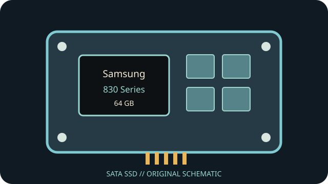

[ INDIVIDUAL COMPONENT // SATA SSD ]
Samsung 830 Series 64 GB
Capacity- and part-specific archival record. Performance and construction notes are tied to the cited model documentation; do not generalize them across revisions.

IDENTIFICATION: Match exact part number MZ-7PC064D, capacity and revision to the physical label. OEM and regional suffixes can differ.
Specifications
| Manufacturer / model / SKU | Samsung 830 Series — MZ-7PC064D |
|---|---|
| Capacity | 64 GB |
| Generation | 2011 client SATA SSD generation |
| Form factor | 2.5-inch, 7 mm |
| SATA generation / interface | SATA 6 Gb/s (SATA III); backward compatible with lower SATA generations |
| Controller / NAND / performance / endurance | Samsung 2x nm-class Toggle DDR MLC NAND and Samsung controller; manufacturer-published sequential maximums for the 64 GB capacity are up to 520 MB/s read and 160 MB/s write. No exact TBW rating is asserted from the available model-specific documentation. |
| TRIM / firmware | TRIM is supported by appropriate firmware/OS combinations, but requires ATA Data Set Management to reach the device. Check firmware revision; Samsung Magician versions may no longer support this product generation. |
| Host compatibility | 2.5-inch, 7 mm body uses standard SATA data/power. A SATA 3 Gb/s host works at its negotiated link rate; check laptop bay height, BIOS/AHCI mode, and boot compatibility. |
Age-related handling & preservation
- Before use, record the label, serial, firmware, SMART health attributes, host/controller and a read-only data/health snapshot; keep verified backups.
- Peak transfer rates and historical endurance ratings do not guarantee remaining life, powered-off retention or recovery after controller failure. Inspect for corrosion, damaged connectors and prior repair.
- Firmware utilities, manuals, warranty coverage and host drivers may be discontinued. Do not update, secure-erase or cross-flash until the full part number/revision and a verified backup are established.
- Check OS TRIM/SMART support directly; bridge, RAID, driver and BIOS behavior can block or alter these features.
Manufacturer / manual sources
- Samsung — manuals and downloadsManufacturer downloads portal; select the 830 Series and confirm model-specific documentation.
- Samsung 830 Series user guide / specificationsArchived Samsung 830 Series product literature; confirm the capacity-specific row and physical SKU.
Sources are HTTPS manufacturer product/support pages or product manuals. Match the complete drive label and document revision before applying family-level information to an individual unit.